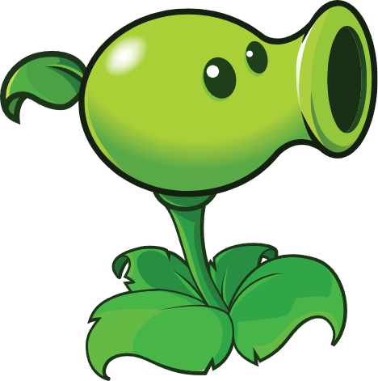
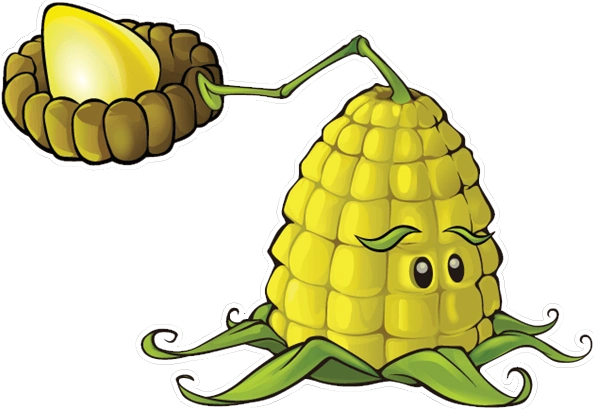
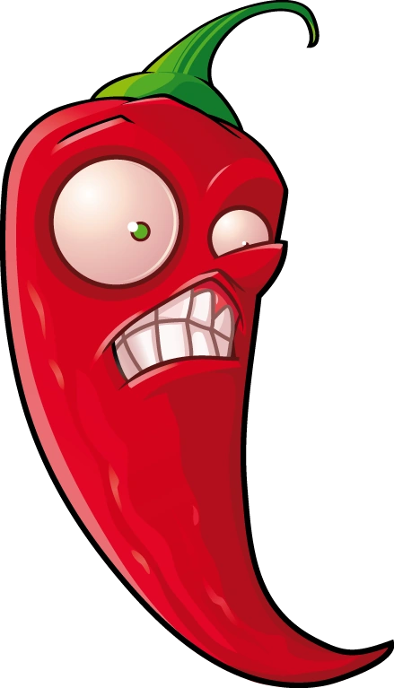
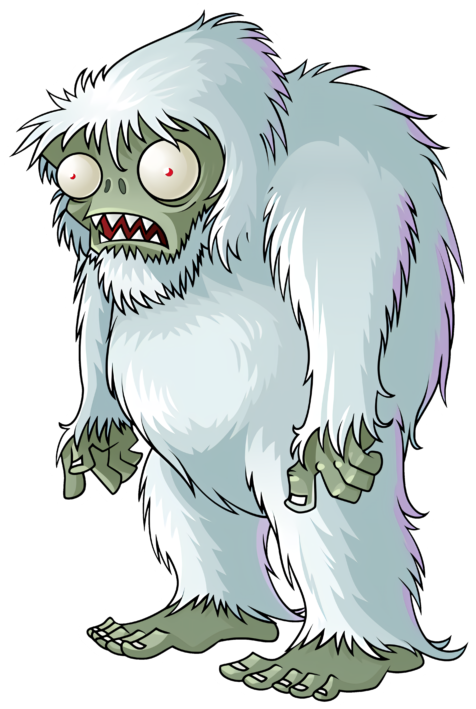
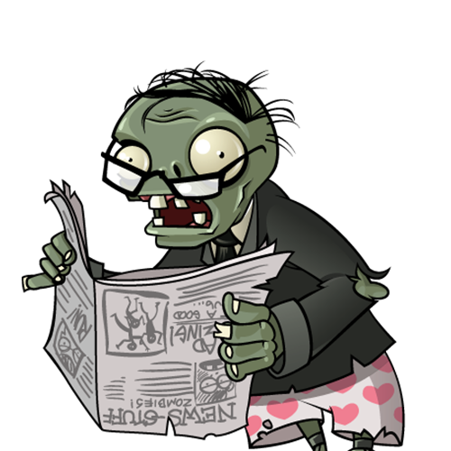

THE GARDEN ARCHIVE
BIENVENIDO AL JARDÍN
Todo comenzó con una idea tan sencilla como peculiar: ¿qué pasaría si unas plantas fueran las encargadas de defender una casa de una invasión zombi? De esta premisa nació Plants vs. Zombies, un juego creado por PopCap Games que convirtió un jardín común en un divertido campo de batalla. Pero detrás de cada planta y cada zombi también existe una historia. Desde las ideas que dieron forma al juego hasta el universo que conocemos hoy, descubre cómo nació este peculiar enfrentamiento y qué hizo que se convirtiera en un clásico.
Conoce la historia completa